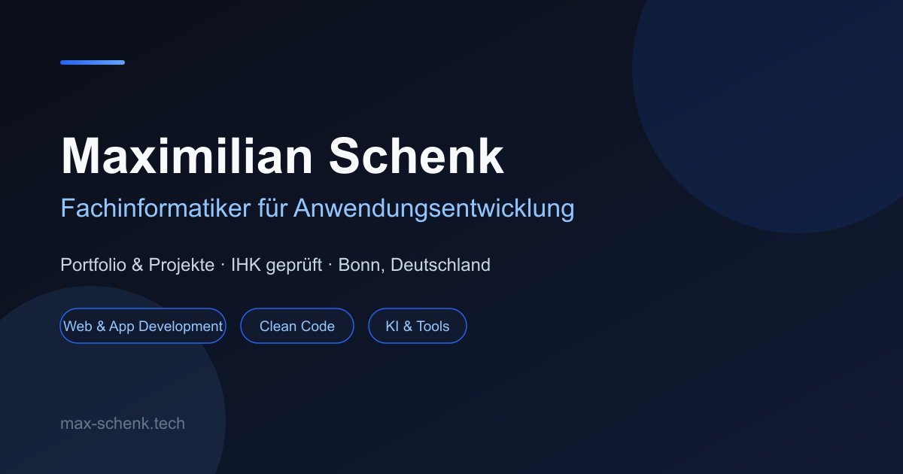

🧭 Dieses Portfolio — PWA ohne Framework🧭 This Portfolio — Framework-free PWA

Die Website, die du gerade siehst: statisches HTML/CSS/JS ohne Framework und Bundler, offlinefähig als PWA, mit strenger Content-Security-Policy, zweisprachig (DE/EN) und barrierearm (WCAG 2.1 AA). Qualität sichern Unit- und E2E-Tests in vier Browsern, Lighthouse-Schwellen und über 20 automatische Prüfskripte in der CI. Die Architekturentscheidungen sind als ADRs im Repository dokumentiert (docs/adr).
The website you are looking at: static HTML/CSS/JS without a framework or bundler, offline-capable as a PWA, with a strict Content Security Policy, bilingual (DE/EN) and accessible (WCAG 2.1 AA). Quality is backed by unit and E2E tests in four browsers, Lighthouse thresholds and over 20 automated check scripts in CI. The architecture decisions are documented as ADRs in the repository (docs/adr).